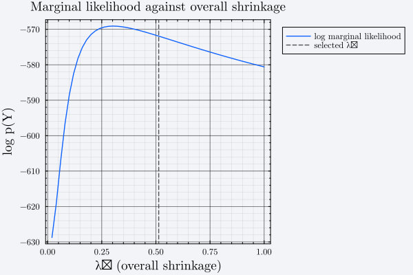

Priors
Stage 4a. build_prior is the single entry point to nine named prior families from the literature, returned as one of five concrete types.
Choosing a family
The family argument is a Symbol, and the mapping from symbol to returned type is not one-to-one with the names in the literature — :normal_wishart covers five different priors depending on dummy_components. Note also that the symbol is :hamilton_baumeister while the type is BaumeisterHamiltonPrior.
family | Returns | Literature | Posterior |
|---|---|---|---|
:minnesota | MinnesotaPrior | Litterman (1986) | Closed form, $\Sigma$ plugged in |
:normal_wishart | NormalWishartPrior | Kadiyala & Karlsson (1997); + dummy observations | Closed form |
:independent_niw | IndependentNIWPrior | independent Normal-Inverse-Wishart | Gibbs only |
:asymmetric_conjugate | AsymmetricConjugatePrior | Chan (2022) | Closed form |
:hamilton_baumeister | BaumeisterHamiltonPrior | Baumeister & Hamilton (2019) | Closed form |
prior_nw = build_prior(df, end_vars, est, :normal_wishart)
typeof(prior_nw)NormalWishartPrior{Float64}build_prior needs statistics a VARestimate does not carry — the univariate AR(est.lags) residual variances used as prior scale, and the sample means that anchor the dummy-observation priors — so it takes df and end_vec alongside est. end_vec must equal est.names in the same order, and df must have the same number of rows as the data est was fit on. The Gram blocks are recovered from est via gram_blocks rather than re-derived, so a mismatch would combine statistics from two different datasets.
Composable dummy-observation priors
With family = :normal_wishart, dummy_components stacks pseudo-observations onto the regression. Several may be combined at once, which is how they are used in practice:
| Component | Prior | Reference |
|---|---|---|
:minnesota | Dummy-observation Minnesota | Bańbura, Giannone & Reichlin (2010) |
:sum_of_coefficients | Single unit-root / sum-of-coefficients | Doan, Litterman & Sims (1984); Sims (1993) |
:dummy_initial_obs | Dummy initial observation ("co-persistence") | Sims (1993) |
:long_run | Prior for the long run | Giannone, Lenza & Primiceri (2019) |
prior_dummy = build_prior(
df, end_vars, est, :normal_wishart;
dummy_components = [:minnesota, :sum_of_coefficients, :dummy_initial_obs],
)
(typeof(prior_dummy), size(prior_dummy.β0), prior_dummy.ν0)(NormalWishartPrior{Float64}, (7, 3), 3.0):long_run additionally requires the keyword H, the linear combinations whose long-run behaviour the prior constrains.
Hyperparameters
By default build_prior tunes the shrinkage hyperparameters by maximizing the family's closed-form log marginal likelihood, using hand-rolled golden-section coordinate ascent (optimize_hyperparameters, golden_section_ascent, coordinate_ascent):
prior_minn = build_prior(df, end_vars, est, :minnesota) # :marginal_likelihood is the default
prior_minn.λ(λ1 = 0.5130272178903308, λ2 = 0.12253004751938391, λ3 = 2.999963386612102, λ4 = 100000.0)To fix them instead, pass both hyperparameter_method = :fixed and a hyperparameters NamedTuple. The expected keys are those of the corresponding *_prior function — (λ1, λ2, λ3, λ4) for :minnesota and :independent_niw, (λ0, λ1, λ3, κ0, random_walk) for :hamilton_baumeister. Passing hyperparameters without :fixed is an error.
prior_fixed = build_prior(
df, end_vars, est, :minnesota;
hyperparameter_method = :fixed,
hyperparameters = (λ1 = 0.2, λ2 = 0.5, λ3 = 1.0, λ4 = 1e5),
)
prior_fixed.λ(λ1 = 0.2, λ2 = 0.5, λ3 = 1.0, λ4 = 100000.0)Marginal-likelihood tuning is not implemented for :independent_niw — that family has no closed-form marginal likelihood — so hyperparameter_method must be :fixed there.
What the tuning is maximizing
log_marginal_likelihood has a method per conjugate family, each taking the Gram blocks rather than the raw data — gram_blocks recovers $X'Y$ and $Y'Y$ from a VARestimate through the OLS identities, so est alone is enough:
using Plots
gram = BVAR.gram_blocks(est)
λ1s = 0.02:0.02:1.0
lml = map(λ1s) do λ1
p = build_prior(
df, end_vars, est, :minnesota;
hyperparameter_method = :fixed,
hyperparameters = (λ1 = λ1, λ2 = 0.5, λ3 = 1.0, λ4 = 1e5),
)
BVAR.log_marginal_likelihood(p, gram.XᵀX, gram.XᵀY, gram.YᵀY, est.obs)
end
plot(
λ1s, lml;
label = "log marginal likelihood",
xlabel = "λ₁ (overall shrinkage)",
ylabel = "log p(Y)",
title = "Marginal likelihood against overall shrinkage",
)
vline!([prior_minn.λ.λ1]; label = "selected λ₁", linestyle = :dash)
Small $\lambda_1$ shrinks hard toward the prior mean (a random walk); large $\lambda_1$ approaches OLS. The maximum is the data's answer to that trade-off.
For MinnesotaPrior the returned number treats each equation's residual variance as known at its univariate AR estimate rather than integrating it out — the Minnesota prior places no proper prior on $\Sigma$, so there is no fully Bayesian evidence to compute. It is valid for choosing hyperparameters within the family, but it is not comparable to the marginal likelihood of a family that does put a prior on $\Sigma$. Do not use it for cross-family model comparison.
Prior objects
None of the five prior structs carries a docstring in src/ yet, so they do not appear in the API Reference. Their fields are documented here instead. All five subtype the unexported BVAR.AbstractVARPrior{T}.
Fields shared by all five: lags::Int, vars::Int, names::Vector{Symbol}.
MinnesotaPrior — Litterman (1986). No prior on $\Sigma$; it is plugged in at its univariate AR estimate, which is what allows per-equation cross-variable shrinkage.
| Field | Type | Meaning |
|---|---|---|
β0 | Matrix{T} | Prior mean, k × vars (random walk by default) |
Ω0 | Matrix{T} | Per-equation diagonal prior precision blocks |
σ_ar | Vector{T} | Univariate AR residual standard deviations, used as scale |
λ | NamedTuple | The selected (λ1, λ2, λ3, λ4) |
NormalWishartPrior — natural conjugate; also the target of all four dummy-observation families.
| Field | Type | Meaning |
|---|---|---|
β0 | Matrix{T} | Prior mean, k × vars |
Ω0 | Matrix{T} | Prior precision, k × k (Kronecker-linked to $\Sigma$) |
S0 | Matrix{T} | Inverse-Wishart scale |
ν0 | T | Inverse-Wishart degrees of freedom |
include_constant | Bool | Row-layout flag |
IndependentNIWPrior — $\beta$ and $\Sigma$ independent a priori, so Ω0 is a full $kn \times kn$ matrix rather than Kronecker-linked. This is what buys back the original Minnesota cross-equation asymmetry, and what costs the closed-form posterior.
| Field | Type | Meaning |
|---|---|---|
β0 | Vector{T} | Prior mean, vectorized, length k * vars |
Ω0 | Matrix{T} | Full prior covariance, k*vars × k*vars |
S0 | Matrix{T} | Inverse-Wishart scale |
ν0 | T | Inverse-Wishart degrees of freedom |
AsymmetricConjugatePrior — Chan (2022). Stored per equation, hence the vectors of vectors: an independent Normal-Gamma prior per equation retains a closed form despite equation-specific shrinkage.
| Field | Type | Meaning |
|---|---|---|
β0 | Vector{Vector{T}} | Prior mean, one vector per equation |
Ω0 | Vector{Matrix{T}} | Prior covariance, one matrix per equation |
κ | Vector{T} | Gamma shape per equation |
τ | Vector{T} | Gamma rate per equation |
BaumeisterHamiltonPrior — Baumeister & Hamilton (2019, Appendix A), the reduced-form ($A = I$) slice of their reference prior.
| Field | Type | Meaning |
|---|---|---|
m | Vector{Vector{T}} | Prior mean per equation |
M | Vector{Matrix{T}} | Prior covariance per equation |
κ | Vector{T} | Gamma shape per equation |
τ | Vector{T} | Gamma rate per equation |
structural | Bool | false for the reduced form; true once extended to $A \neq I$ by hamilton_structural_prior |